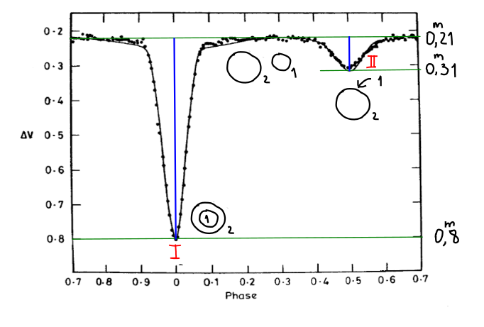

Практика. Кривая блеска и кривая лучевой скорости, найти всё, что получится.
- Фотометрия: найти светимости.
-
Лучевые скорости: найти массы.
- Повторение спектров
- Эффект Допплера
- Спектральные двойные
Перед Вами кривая блеска и кривая лучевых скоростей затменной двойной R CMa. Её внезатменная звёздная величина \(5^m\!.7\), период обращения компонент 1.136 дня, а расстояние до системы \(43\) пк. Будем считать, что луч зрения лежит в плоскости орбиты.
- По кривой блеска: найдите светимости обеих компонент в светимостях Солнца
- По кривой лучевых скоростей: найдите массы обеих компонент в массах Солнца.
- Используя полученные данные, найдите эффективные температуры звёзд.
Решение
На кривой блеска в задаче довольно хорошо видно два минимума и практически пологая внезатменная область. Пусть \(L_1\) — светимость первой компоненты (которая поменьше размером), а \(L_2\) — второй. Предположим, что затмения полные: бо́льшая звезда целиком затмевает меньшую, а меньшая полностью заходит на диск бо́льшей. Обозначим их радиусы \(R_1\) и \(R_2\) соответственно, \(R_1 < R_2\). Посчитаем общую светимость системы в разных положениях (на разных фазах).
- Во внезатменной области: \(L = L_1 + L_2\).
- В более глубоком минимуме: \(L = L_2\).
- В более «мелком» минимуме: \(L = L_1 + L_2 \cdot \left(\frac{\pi R_2^2 - \pi R_1^2}{\pi R_2^2}\right)\) \(=\) \(L_1 + L_2 \cdot \left(1 - \left(\frac{R_1}{R_2}\right)^2\right)\).

Выразим глубины минимумов.
\[ \begin{aligned} \Delta m_{\text{I}} &= 2.5 \, \lg \frac{L_1 + L_2}{L_1 + L_2 \left(1 - R_1^2/R_2^2\right)} & &\Rightarrow& \frac{R_1^2}{R_2^2} &= \left(1 - 10^{-0.4\, \Delta m_{\text{I}}}\right)\cdot\left(1 + \frac{L_1}{L_2}\right) \\ \Delta m_{\text{II}} &= 2.5 \, \lg \frac{L_1 + L_2}{L_2} & &\Rightarrow& \frac{L_1}{L_2} &= 10^{0.4\, \Delta m_{\text{II}}} - 1 \\ \end{aligned} \]Глубины минимумов мы можем узнать из картинки выше. Подставим их сюда.
\[ \begin{aligned} \Delta m_{\text{II}} &= 0^m\!.1 &&\Rightarrow& \frac{L_1}{L_2} &\approx 0.1, \\ \Delta m_{\text{I}} &= 0^m\!.59 &&\Rightarrow& \frac{R_1}{R_2} &\approx 0.7. \\ \end{aligned} \]
а если поменять пики местами?
То есть, получились вполне разумные значения. С другой стороны, реальной системе они не соответствуют.
У нас получилось найти отношение светимостей. Найдём их сумму с помощью внезатменной звёздной величины. Для этого можно вспомнить абсолютную звёздную величину Солнца: \(4^m\!.83\) (это, напомню, с расстояния в 10 парсек).
\[ m - M_\odot = -2.5 \,\lg \frac{{(L_1 + L_2)}\,/\,{(4\pi r^2)}}{{L_\odot} \,/\, {(4\pi 10^2)}} = -2.5 \,\lg \frac{L_1 + L_2}{L_\odot} + 2.5 \, \lg 4.3^2 \]Отсюда получается, что \(L_1 + L_2 = 8.3 L_\odot\) (если Вы брали \(M_\odot = 4^m\!.5\), то получится \(6.1\)). Зная отношения, находим сами светимости: \(L_2 = 8.3/1.1 = \textcolor{red}{7.5\, L_\odot}\), \(L_1 = \textcolor{red}{0.75\, L_\odot}\).
Чтобы справиться с этой частью, нужен небольшой кусочек теории. Предположим, обе звезды имеют круговые орбиты (в частности, это так для нашей звезды). По условию, луч зрения лежит в плоскости орбиты, то есть мы видим эту систему с ребра.

Наибольшие значения лучевых скоростей достигаются когда компоненты удаляются дальше всего от центра (как нам кажется) и при этом совпадают со линейной скоростью равномерного движения по окружности. А эти скорости равны \(\frac{2\pi\, a_1}{T}\) и \(\frac{2\pi\, a_2}{T}\), соответственно.
Из определения центра масс \(a_1 m_1 = a_2 m_2\). Так как \(a = a_1 +a_2\),
\[ a_1 = \frac{a\, m_2}{m_1 + m_2}, \quad a_2 = \frac{a\, m_1}{m_1 + m_2}. \]Подставим \(a_1\) и \(a_2\) в формулы для скоростей:
\[ \begin{aligned} v_1 &= \frac{2\pi a_1}{T} = \frac{2\pi a\, m_2}{(m_1 + m_2)\, T}\\ v_2 &= \frac{2\pi a_2}{T} = \frac{2\pi a\, m_1}{(m_1 + m_2)\, T}. \end{aligned} \]Выразим \(a\) из третьего закона Кеплера:
\[ \frac{a^3}{T^2} = \frac{G\, (m_1+m_2)}{4\pi^2} \: \Rightarrow \: a = \left(\frac{T}{2\pi}\right)^{2/3}\, \bigl(G\,(m_1+m_2)\bigr)^{1/3}. \]Подставим полученное выражение в формулу для \(v_1\):
\[ v_1 = \frac{(2\pi)^{1/3} \,m_2\, G^{1/3}}{(m_1 + m_2)^{2/3}\, T^{1/3}} \: \Leftrightarrow \: \frac{v_1^3\, T}{2\pi\,G} = {\color{darkgreen}\frac{m_2^3}{(m_1+m_2)^2}}. \]Величина в правой части уравнения называется \(\color{darkgreen}\text{функцией масс}\), а в левой части стоят известные из наблюдений величины и константы. Когда мы видим всего одну кривую лучевой скорости (например, если вторая компонента слишком тусклая), функция масс — лучшее, что можно получить.
Однако, для R CMa есть данные для обоих звёзд. Выражения для скорости дают нам отношение масс — \(v_2/v_1 = m_1 / m_2\). Подставим его в выражение функции масс:
\[ \frac{v_1^3\, T}{2\pi\,G} = \frac{m_2^3}{(m_2\cdot v_2/v_1 +m_2)^2} = \frac{m_2}{(v_2/v_1 + 1)^2}. \]В итоге, можно посчитать \(m_2\)! А зная отношение масс, получить и \(m_1\).
Решение
Решение
Чтобы найти эффективные температуры, нам не хватает самих радиусов звёзд (так как отношения уже известны из первой части задачи). Попробуем найти их сумму. В этом нам помогут ширины минимумов (а не глубины, как раньше) и скорости звёзд.
- Никифоров Дмитрий
- Константин Лявданский
- Евстафьева Ксения